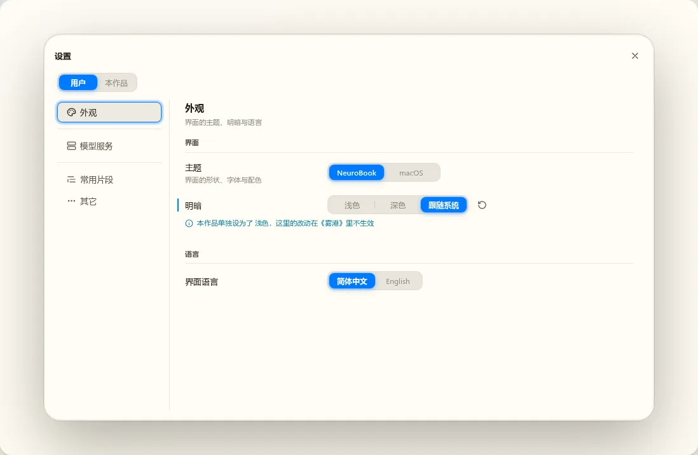
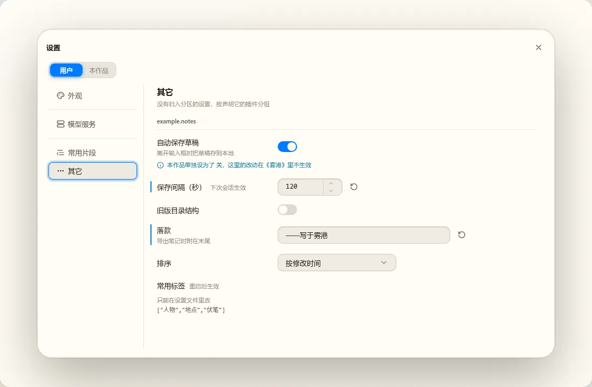
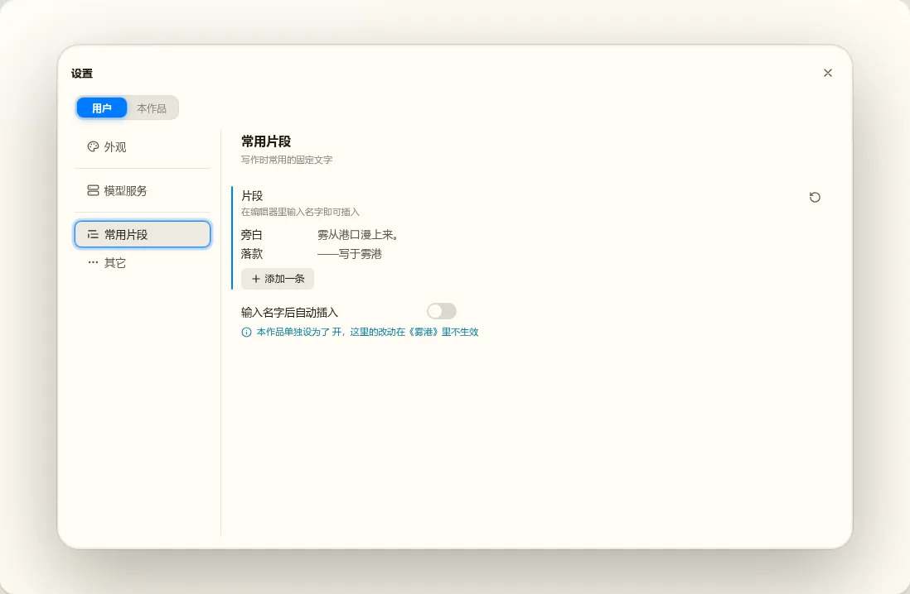
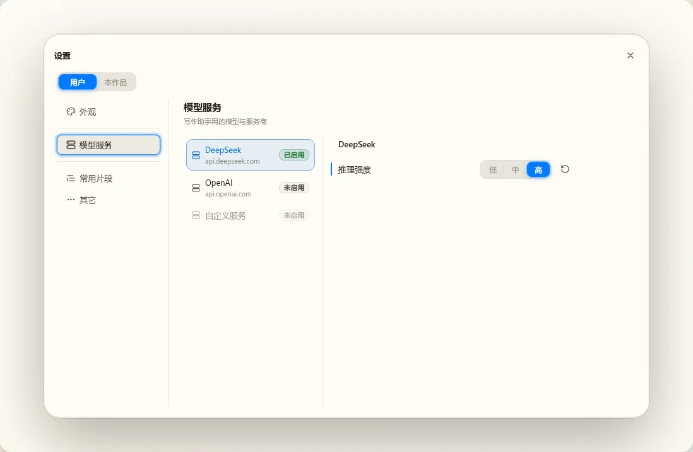
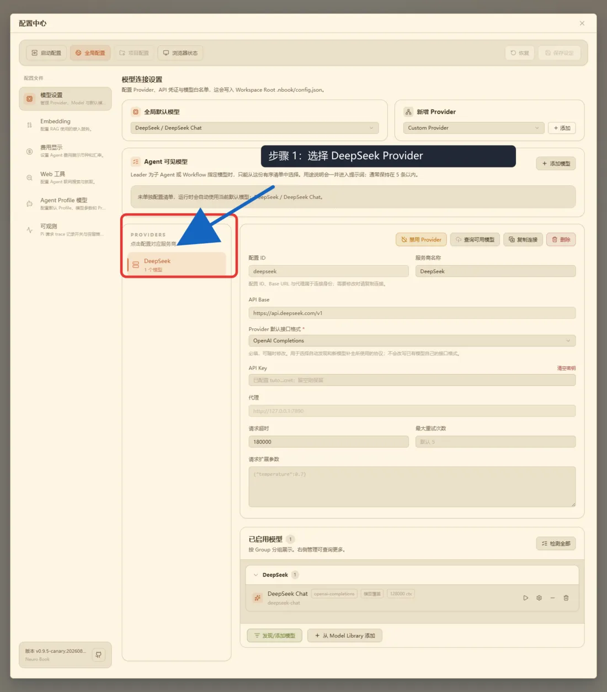
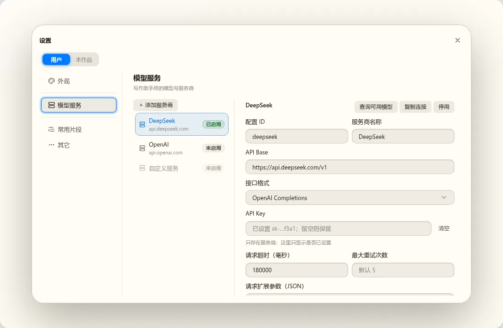
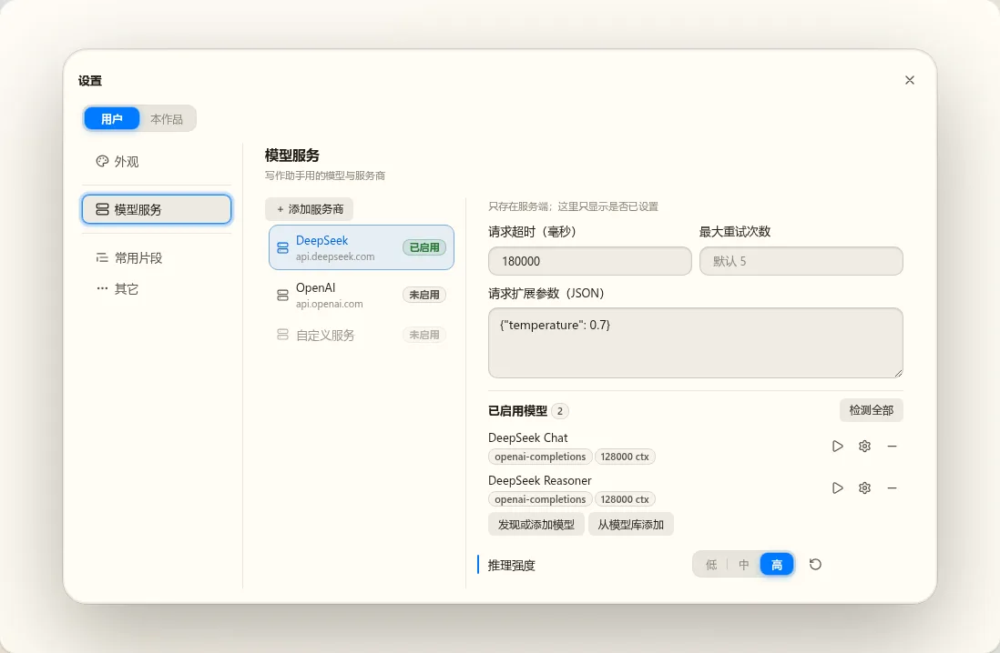

设置分区的两种画法，与旧应用的 provider 设置
w00027 t02（设置补齐）的说明页，2026-10-20。截图来自 Work 分支 feat/w00027-plugin-platform 的 Component Lab，设置窗口是缺省大小 960×640。点图看原图。
结论：旧应用“左边列服务商、右边详情”的 provider 设置，在新设置窗口里用 page 分区的 fill 版式就能做，左栏、详情表单、模型列表、对话框都有现成组件。真正挡路的是四件事：API Key 没有密钥存储、一组字段一起保存的草稿没有窗口级的“未保存”保护、下拉选项不能来自运行时数据（例如“默认模型”从已配置的服务商里选）、第三方插件还拿不到这些页面组件。前三件放进 t02，第四件随 t04 的 SDK。
1. 两种画法：list 与 page
设置窗口左栏的每一项是一个分区，由插件经贡献点 settings.sections 贡献。分区有两种：
| list 分区 | page 分区 | |
|---|---|---|
| 谁画 | 设置窗口按配置项的声明画控件，插件不写界面 | 插件交一个 Vue 组件，窗口只画分区标题与说明 |
| 适合 | 开关、选项、数字、单行文字这类单个值 | 对象数组、一组互相关联的字段、要先选再编辑的东西、要调服务端的动作（检测连接） |
| 插件要写 | 分区声明（标题、图标、小组）＋ 配置项写 section、group | 分区声明 ＋ load() 交出组件；组件里用 SettingsRow 包每一行 |
| “已修改”、恢复默认、用户层与本作品层 | 窗口自动处理 | 用 SettingsRow 包一行就有，和 list 一样 |
| 版式 | 标签列加控件列；宽控件（多行、JSON、列表）另起一行，现在只读 | column：放进和 list 一样的内容列；fill：拿到标题下整块区域，自己分栏、自己滚动 |
| 现有例子 | 外观、资源管理器、编辑器、“其它” | 作品（column）、插件（column）、示例插件 snippets（column）、Lab 的“模型服务”（fill） |
2. list 分区：只写声明，窗口来画
// 分区：浏览器入口贡献一条声明
export const EXPLORER_SECTION_DECLARATION = {
title: {"zh-CN": "资源管理器", "en-US": "Explorer"},
icon: "i-lucide-files", category: "app", order: 20,
kind: "list",
groups: [{id: "tree", title: {"zh-CN": "文件树", "en-US": "File Tree"}}],
};
// 配置项：写明落到哪个分区、哪个小组
export const indentGuidesSetting = defineSetting({
plugin: "nbook.explorer", name: "indentGuides",
schema: Type.Union([Type.Literal("none"), Type.Literal("hover"), Type.Literal("always")]),
default: "hover",
title: {...}, section: "nbook.explorer", group: "tree",
choices: [{value: "none", title: {...}}, ...], // 选项多于 3 个时画下拉
});



3. page 分区：插件自己画（column 与 fill）
const SECTION = {title: {...}, icon: "i-lucide-server", category: "ai",
kind: "page", layout: "fill", layers: ["user"]}; // 只在“用户”标签下可用
activate: (context) => {
const settings = context.services.require(settingsKey);
return {contributions: {[SETTINGS_SECTIONS_POINT]: {
"example.models": {load: async () => withSettings((await import("./ModelsPage.vue")).default, settings)},
}}};
}
// ModelsPage.vue 里：左栏 <SettingsPageList>，右边每一项用 <SettingsRow> 包住自己的控件



4. 旧应用的 provider 设置放进 fill 页
旧应用跑不起来了（它依赖的仓库脚本已删），左图取自归档的用户文档截图，是较早的版本；后来的版本把“全局默认模型”“Agent 可见模型”拆成了独立区段，“新增 Provider”移到了左边列表顶部。右边两张是把旧页的内容临时摆进 Lab 的 fill 示例里截的静态稿（只为截图，没有提交，按钮都不工作），用来看缺省窗口大小下放不放得下。






SettingsRow 包的普通配置项。窗口可以拖大，大小按客户端记住；切换分区时不变大小。缺省 960 宽时三栏（分区、服务商、详情）比旧应用挤，但放得下；用户常用这一页时会把窗口拉大。
5. 逐块对照：能做好的与缺的
| 旧页的这一块 | 新设置里怎么做 | 现状 |
|---|---|---|
| 服务商列表、选中、启用状态 | SettingsPageList，尾部插槽放徽标；“添加服务商”与模板选择放在列表顶部 | 能做好 |
| 连接表单（ID、名称、API Base、接口格式、代理、超时、重试、扩展参数） | nb-ui 的表单组件；多个短字段两列排 | 能做好 缺省宽度下详情约 470px |
| API Key（已配置时打码、清空密钥） | 声明 secret: true 的配置项：只存在服务端，浏览器只看到已设置／未设置，只能填写或清除 | 缺 现在声明 secret 会被拒；只能明文写进 settings.json |
| “保存设定”与“恢复”（一组字段改完一起存）、校验问题横幅 | 页面自己持有草稿，点保存时一次写入整个服务商对象；校验结果页面自己显示 | 能做，但窗口不帮忙 关窗口、切分区时草稿直接丢，没有“有未保存的改动”的提示；需要窗口给页面一个“我有未保存改动”的接口 |
| 服务商数据放哪 | 服务商列表是对象数组：作为一个配置项（Type.Array(对象)，可进 settings.json），API Key 单独走密钥 | 能做 写入是整键替换，两个窗口同时改不同服务商时后写的覆盖前者 |
| 全局默认模型、Agent 可见模型 | 理想是 list 分区里一个下拉；但选项来自已配置的服务商与模型，是运行时数据 | 缺 list 分区的 choices 只能写死在声明里；现在只能做成 page。可以加“动态选项”（由声明者插件提供选项） |
| 已启用模型的分组列表、检测、发现模型、模型库 | 页面内组件；检测与发现调插件自己在服务端的远程服务；对话框用 nb-ui Dialog | 能做 设置窗口里再弹模态对话框的层级与焦点没有实测 |
| 项目作用域只显示“继承全局”的说明 | 分区声明 layers: ["user"]：“本作品”标签下分区停用并说明原因 | 已有 |
| 窄屏（旧应用有手机排法） | fill 页可以在窄宽度改成上下排（示例已这样写） | 不承诺 设置窗口规范只做桌面宽度 |
| 由第三方插件来做这一页 | 需要从 SDK 拿到 SettingsPageList、SettingsRow、设置分区的贡献点 | 等 t04 现在这些都在应用内部路径 |
| 插件什么时候启动 | 最好“打开这个分区时才启动” | 缺 现在 page 分区的入口只能启动即激活，否则分区一直显示“正在等待启动” |
| 多个 provider 插件往同一页里加服务商 | 拥有这一页的插件（以后的模型或 Agent 插件）定义自己的贡献点，例如 models.providers | 机制已有 还没有例子 |
6. 放进 t02 的事
和这一页相关、准备写进 t02 计划的：
- 密钥：
secret: true的配置项在服务端加密保存，浏览器只见已设置／未设置；设置窗口与SettingsRow给出密钥项的控件。 - 页面的未保存保护：page 页面可以告诉窗口“有未保存的改动”，关窗口、切分区、切标签时先确认。
- 动态选项：配置项的选项可以由声明者插件在运行时给出，list 分区照样画下拉。
- “分区被显示时激活”的激活事件：page 分区的入口不必启动即激活。
- 原定范围：数组、对象、多行文本的通用编辑；搜索；打开设置文件；编辑器字体、字号等配置项接入；声明 API 的易用性（按插件批量声明、list 分区不交空实现、页面直接拿到配置服务）。
做完这些，provider 设置页本身仍然要等 Agent 和模型插件重建时再写；t02 只把它需要的设置能力备好，并把 Lab 里的“模型服务”示例补成能验证这些能力的样子。